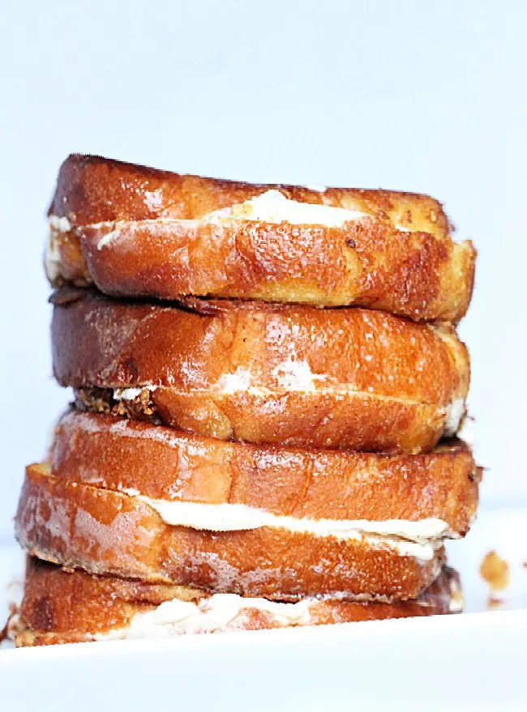

Cream Cheese French Toast

This french toast has cream cheese in it!
Ingredients:
- 8-10 slices of bread
- 3 eggs
- 3/4 cup milk
- 1 TBSP vanilla
- 1/2 tsp ground cinnamon
Filling:
- 8 oz whipped cream cheese, softened
- 2 TBSP powdered sugar
- dash of ground cinnamon
- 1 tsp vanilla
Steps:
- In a mixing bowl, beat together cream cheese, powdered sugar, cinnamon and vanilla until fluffy.
- Spread a slice of bread with cream cheese filling. Top with another piece of bread to make a sandwich.
- In a bowl, whisk together eggs, milk, vanilla and ground cinnamon. Dip entire sandwich into egg mixture.
- Over medium heat, melt butter in a pan.
- Add coated sandwich to the skillet. Cook on both sides evenly until they are browned. Repeat with remaining bread and filling.
- Serve with syrup and butter.